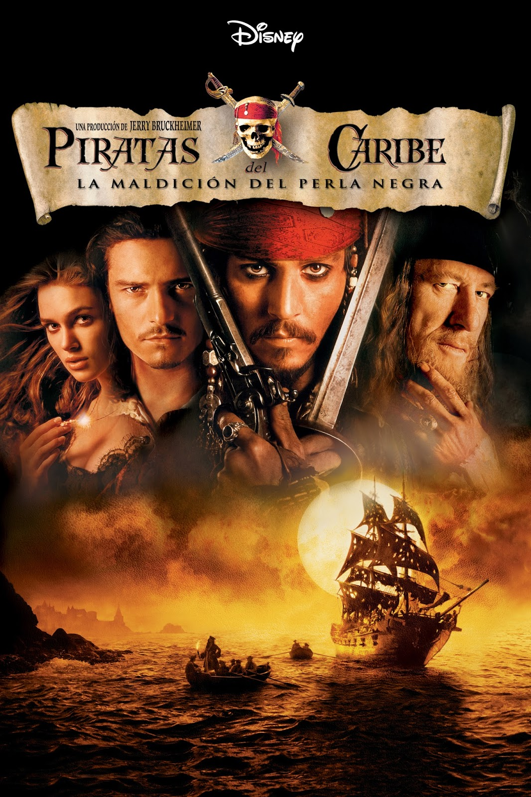
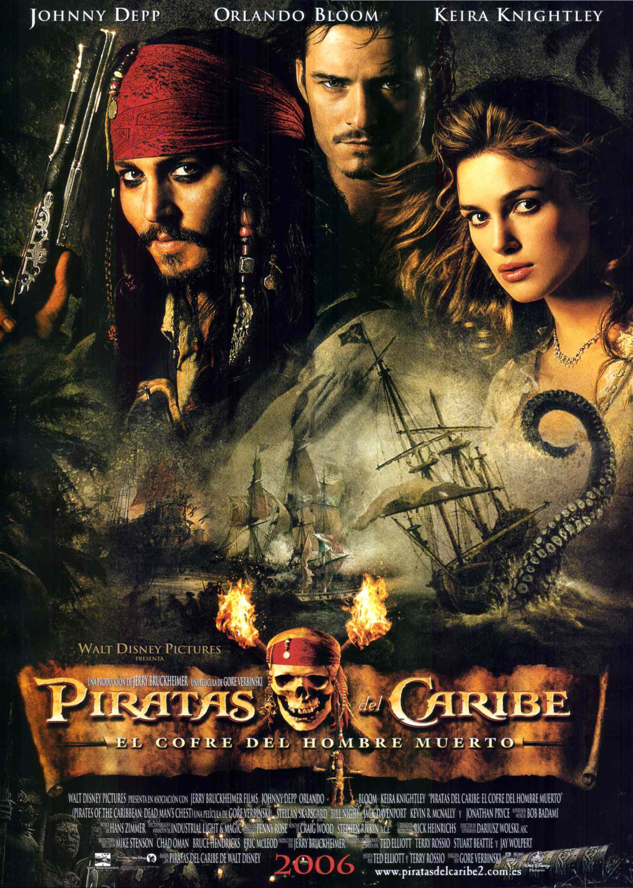
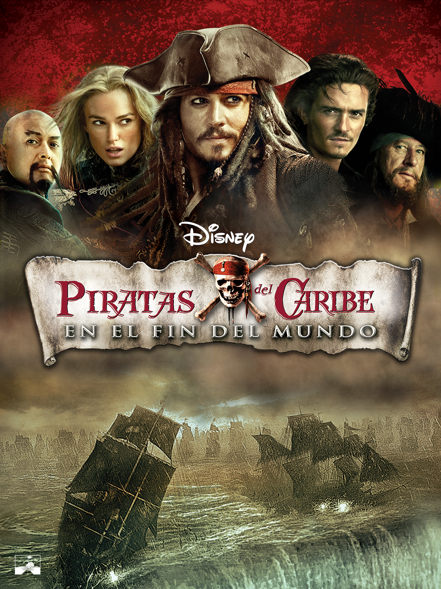
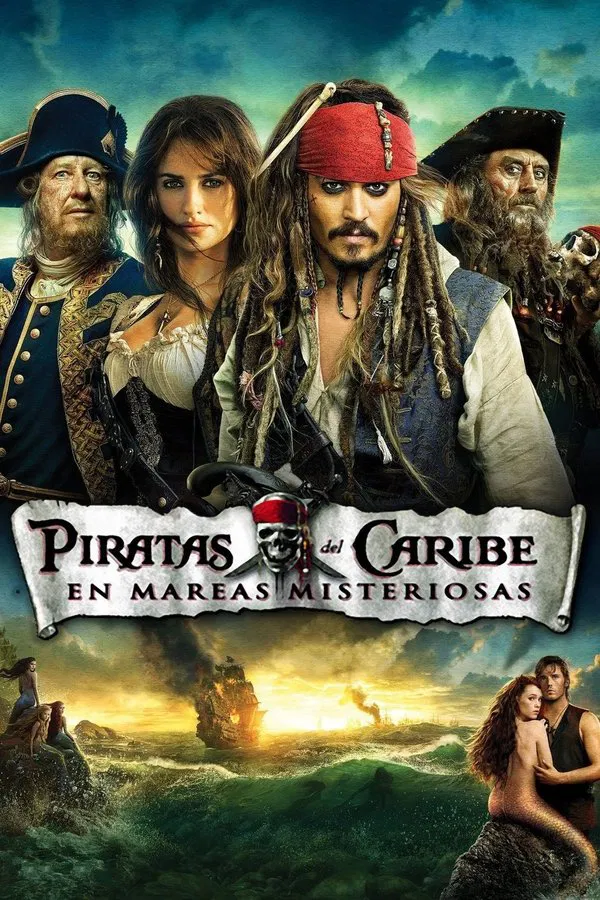
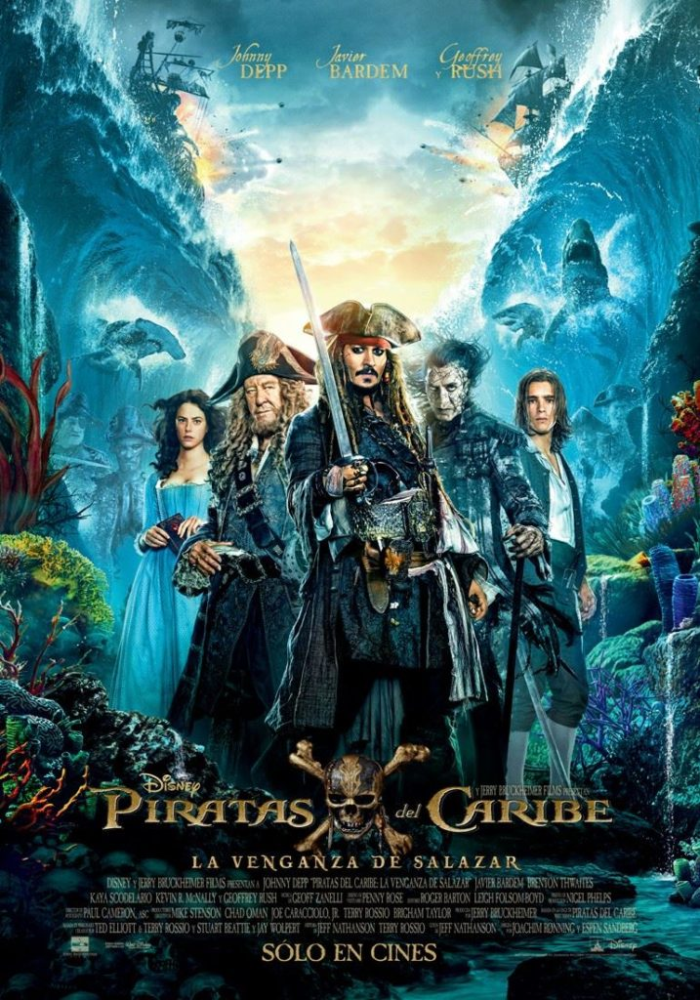

Introducción.
La saga de Piratas del Caribe está formada por cinco películas de aventuras protagonizadas por Jack Sparrow. A lo largo de la historia, los personajes viven numerosas aventuras en el mar enfrentándose a piratas, tesoros y peligros.
La saga de Piratas del Caribe está formada por cinco películas de aventuras protagonizadas por Jack Sparrow. A lo largo de la historia, los personajes viven numerosas aventuras en el mar enfrentándose a piratas, tesoros y peligros.
En esta primera película, el herrero Will Turner y el capitán Jack Sparrow se unen para rescatar a Elisabeth Swann de una tripulación de piratas malditos

Jack Sparrow intenta saldar una deuda de sangre con Davy Jones, mientras que Will y Elisabeth son arrestados en su boda e intentan buscar a Davy Jones.

Will Turner, Elisabeth Swann y Barbosa viajan al fin del mundo para rescatar a Jack Sparrow, mientras las hermandades piratas se reúnen para enfrentarse a una batalla contra Lord Beckett y Davy Jones.

Jack Sparrow comienza una carrera contra el tiempo para encontrar la Fuente de la juventud junto a una persona que formó parte de su pasado, mientras huye de Barbanegra.

Jack Sparrow debe encontrar el tridente de Poseidón para sobrevivir a la persecuión del capitán Salazar, un fantasma que escapó del triángulo del diablo para vengarse de él.

| Título | Año | Enemigo | Duración |
|---|---|---|---|
| La maldición de la Perla negra | 2003 | Capitán Barbosa | 2 horas y 23 minutos |
| El cofre del hombre muerto | 2006 | Davy Jones | 2 horas y 31 minutos |
| En el fin del mundo | 2007 | Lord Beckett | 2 horas y 48 minutos |
| En Mareas misteriosas | 2011 | Barbanegra | 2 horas y 16 minutos |
| La venganza de Salazar | 2017 | Salazar | 2 horas y 9 minutos |